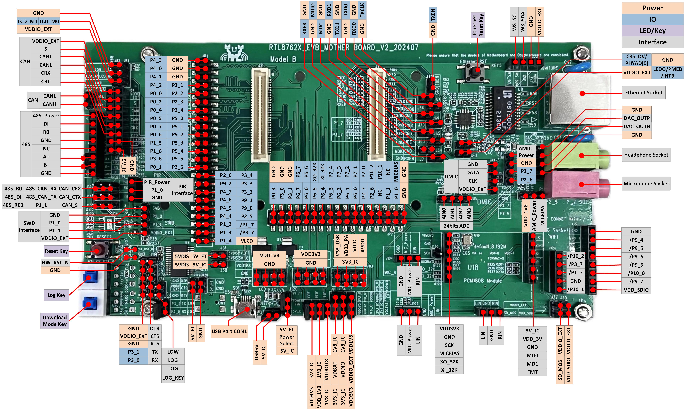
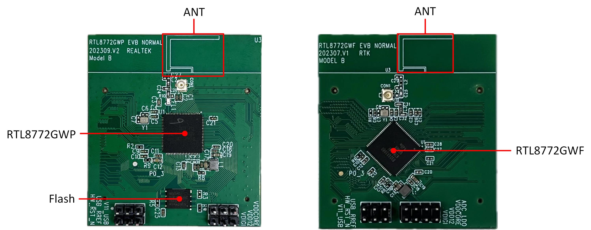
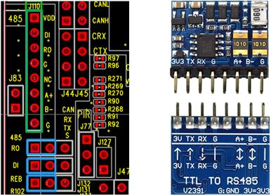
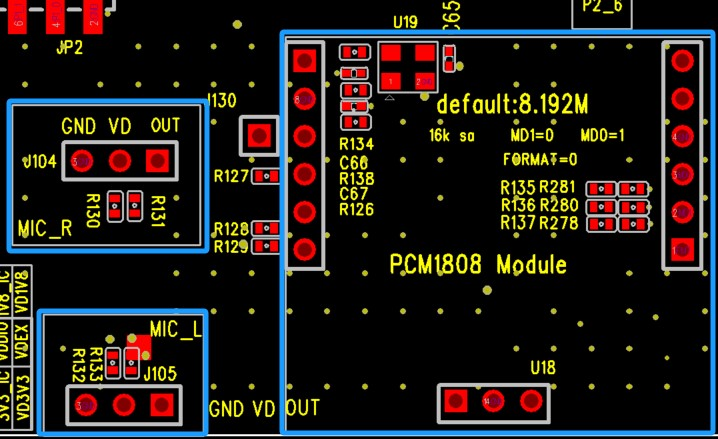
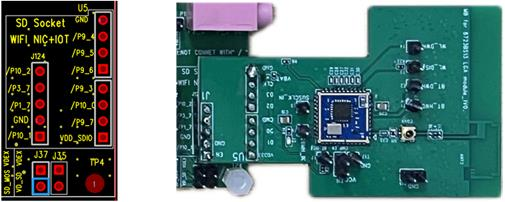
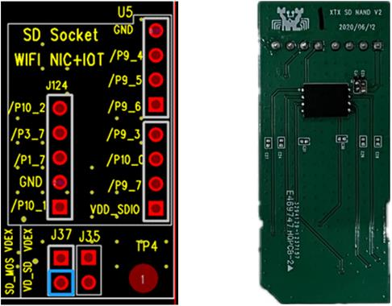
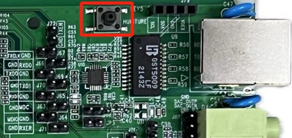

Model B 评估板
概述
RTL87x2G Model B 评估板适配的子板有：
RTL87x2G Model B 评估板上提供了用户开发的硬件环境，包括：
5V 转 3.3V 和 1.8V LDO 电源模块
支持 QSPI （Group1），I8080（Group2）和 RGB888 屏幕接口
支持 Wi-Fi 模块和 SD Nand Flash 模块接口
支持 RS485 和 A2C 接口
支持红外感应模块接口
支持温湿度传感器模块接口
以太网模块
备注
如需购买 EVB，可访问 Realtek 官方网站，获取 导购指引。
区块分布
Model B 评估板 正面 和 背面 的 区块分布 如下。

Model B 评估板区块分布示意图-正面

Model B 评估板区块分布示意图-背面
以下按照逆时针的顺序依次介绍评估板的区块。
区块 |
介绍 |
|---|---|
EVB 子板连接座（EVB Daughter Board Socket） |
用于连接 EVB 子板，具有防倒插机制 |
Model B 评估板支持 QSPI（Group1），I8080（Group2）和 RGB888 屏幕接口 |
|
用于连接 A2C 收发器模块 |
|
用于连接 RS485 模块 |
|
用于连接红外感应模块 |
|
SWD 接口（SWD Interface） |
用于 SWD 调试 |
复位按键（Reset Key） |
按下此按键会复位系统 |
支持下载模式和正常模式 |
|
支持 USB 端口 CON1 或 CON2 对屏幕进行供电 |
|
用于评估板供电，并与 RTL87x2G USB 通信 |
|
外部供电（External Power Supply） |
为外设提供 1.8V 和 3.3V 供电 |
IC 供电电压选择（3.3V/1.8V 可选） |
|
音频模数转换模块接口（Audio Analog-to-digital Conversion Module Interface） |
用于连接音频模数转换模块 |
Wi-Fi 和 SD Nand Flash 复用接口（Wi-Fi and SD Nand Flash Multiplexed Interface） |
用于连接 Wi-Fi 模块或 RTK SD Nand Flash 子板 |
DMIC 接口（DMIC Interface） |
用于连接外部 DMIC 子板 |
AMIC 接口（AMIC Interface） |
用于连接外部 AMIC 子板 |
麦克风和耳机插座（Microphone and Headphone Sockets） |
支持 3.5mm 音频接口 |
以太网模块采用 RTL8201FR，支持 RMII 接口 |
|
用于连接温湿度传感器 |
|
24 位 ADC 接口（24bits ADC Interface） |
24 位 ADC 接口，AIN0-3 可作为四路单端输入，AIN0-1 和 AIN2-3 可作为两路差分输入 |
用于评估板供电，并连接 USB 转 UART 芯片 FT232RL，用于下载程序或调试 |
|
显示接口（Display Socket） |
用于连接显示屏幕 |
接口分布
{kind=link}

Model B 评估板接口分布示意图-正面

Model B 评估板接口分布示意图-背面
备注
评估板上引脚名字前面带有斜杠，如/P1_7，/P3_7，表示该引脚未与 IC 直接相连，使用时需上件对应 0 欧姆电阻。
区块和接口介绍
EVB 子板
EVB子板可拆卸更换，子母板之间的连接座有防倒插机制。RTL87x2G Model B 评估板可适配的子板有 RTL8772GWP 子板和 RTL8772GWF 子板。
{kind=link}

RTL8772GWP 和 RTL8772GWF 子板
电源
- USB 端口 CON1
USB端口CON1，用于 Model B 评估板供电，并与 RTL87x2G USB 通信。
- USB端口CON2
USB端口CON2，用于 Model B 评估板供电，并连接 USB 转 UART 芯片 FT232RL，用于下载程序或调试。

Model B 评估板 USB 端口 CON1 和 CON2
- IC 供电电压选择
VDD_VBAT/VDDIO/VDDIO_EXT 可根据实际运用场景选择 1.8V or 3.3V 供电，默认接 3.3V。电源输入引脚说明如下。
引脚名称 |
作用 |
|---|---|
V33_USB |
为 USB 传输供电 |
VD33_PA |
为内部 +14dBm 射频功率放大器供电 |
AVDD |
为内部 24 位 ADC 供电 |
VDD_VBAT |
为内部稳压器和模拟电路供电 |
VDDIO |
为 PAD 和 Flash 供电 |
VDDIO18 |
为 MCM PSRAM 供电 |
VDDIO_EXT |
为外设供电 |
备注
VDDIO 和 VDDIO_EXT 电压要保持一致。
使用 RTL8772GWP 子板时，VDDIO18 只能选择 1.8V。

Model B 评估板供电电压选择
评估板接口
- UART/LOG 测试接口
- 下载模式:
红框标的两个按键开关都需要按下。按下 reset 按键（或重新上电），进入下载模式。
- 正常模式:
红框标的两个按键开关都需要松开。按下 reset 按键（或重新上电），开始运行程序，此时调试可使用 Log pin。

Model B 评估板 UART/LOG 测试接口
- RS485 接口
使用 RS485 时需要将蓝框标出的三组排针用跳线帽连接。RS485模块 输入 3.3V-TTL。将 RS485 模块连接到评估板时，注意模块上每个 pin 与评估板上 RS485 接口一一对应，防止插反。
{kind=link}

Model B 评估板 RS485 接口和 RS485 模块

Model B 评估板 RS485 模块连接示意图
- A2C 接口
A2C 接口 如图中左边两排绿框所示，用于连接收发器模块，另一排为 A2C 测试接口。使用 A2C 接口时需要将蓝框标出的三组排针用跳线帽连接。模块采用 TJA1051，是一款高速收发器，为控制器提供差动发送和接收功能，传输速率高达 1Mbit/s。将收发器模块连接到评估板时，注意模块上每个 pin 与评估板上 A2C 接口一一对应，防止插反。

Model B 评估板 A2C 接口和收发器模块

Model B 评估板 A2C 接口连接示意图
{kind=link}

Model B 评估板音频模数转换接口

麦克风（左）和音频模数转换模块（右）

Model B 评估板音频模数转换模块连接示意图
- 红外感应接口
使用 红外感应模块 时需要先用跳线帽将 J127 连接，然后将红外感应模块插到 J77，注意接插位置顺序，防止反接。红外感应模块采用 HC-SR505，工作电压范围是 4.5~20V，静态电流小于 50uA。当人进入其感应范围则输出高电平，人离开感应范围则自动延时关闭高电平，输出低电平。支持可重复触发，即感应输出高电平后，在延时时间内，如果有人体在其感应范围活动，其输出将一直保持高电平，直到人离开后才延时将高电平变为低电平。

Model B 评估板红外感应接口及模块

Model B 评估板红外感应模块连接示意图

Model B评估板温湿度传感器接口及模块

Model B评估板温湿度传感器模块连接示意图
- Wi-Fi 和 SD Nand Flash 复用接口
Wi-Fi模块 为 BL-M8189FS6，支持 SDIO 接口。支持 IEEE 802.11b/g/n 标准，并提供高达 150Mbps 的 PHY 速率，提供功能丰富的无线连接和远距离可靠的吞吐量。
SD Nand Flash 连接座 可搭配 RTK SD Nand Flash 子板使用。连接时插入图右边蓝框标出的连接座，注意接插位置顺序，防止反接。
{kind=link}

Model B 评估板 Wi-Fi 接口及模块
{kind=link}

Model B 评估板 SD nand flash 连接座及子板

Model B 评估板 SD nand flash 子板连接示意图
备注
正常模式：Wi-Fi 或 SD Nand Flash 模块正常工作时，需用跳线帽将 J35 排针连接；
低功耗模式：拔掉 J35 上的跳线帽，然后将 J37 中蓝框标出的排针连接任意一个 GPIO。GPIO 输出高，Wi-Fi 或 SD Nand Flash 模块正常工作。GPIO 输出低，模块不工作。
- 以太网模块
以太网模块 采用 RTL8201FR，支持 RMII 接口。红框标出的按键为以太网模块的复位按键。
{kind=link}

Model B 评估板以太网模块
评估板的引脚分配
请参照最新的 RTL87x2G_IOPin_Information 文档。
评估板使用说明
评估板供电接线
Model B 评估板供电可单独使用 USB 端口 CON2 供电，此时 RTL87x2G 的 USB 通信功能无法使用，但可以正常下载程序到 RTL87x2G。评估板供电接线见下图，红框标出的所有跳线帽需接上。

Model B 评估板使用 USB 端口 CON2 供电接线示意图
若需使用 RTL87x2G 的 USB 通信功能，评估板上的 USB 端口 CON1 和 CON2 都需要连接，此时供电连线示意图见下图，红框标出的所有跳线帽需接上。与单独使用 USB 端口 CON2 供电接线不同之处在 J120 中跳线帽选择 5V_IC。

Model B 评估板使用 USB 端口 CON1 和 CON2 供电接线示意图
下载模式接线
P0_3 为下载模式选择管脚，P0_3 拉低后硬件 Reset 或重新上电会进入下载模式， UART/LOG 测试接口 图中红框标的两个按键开关都需要按下，此时 P0_3（log）被拉低，P3_0 连接到 RX，P3_1 连接到 TX，然后按下 reset 按键或重新上电，进入下载模式。
正常模式接线
请确认 UART/LOG 测试接口 图中红框标的两个按键开关松开，此时 P0_3（log）连接到 RX，P3_0 和 P3_1 分别与 RX 和 TX 断开。通过 USB 端口 CON2，用 Debug Analyzer 调试。
以太网与 SDIO 接口切换
由于以太网模块、Wi-Fi 和 SDIO 模块共用同一组 SDIO 接口。当使用以太网模块时，需要将 以太网接口切换 图中的电阻上件，同时解焊 SDIO 接口切换 图中的电阻；当使用 Wi-Fi 和 SDIO 模块时，需要将SDIO 接口切换 图中的电阻上件，同时解焊 以太网接口切换 图中的电阻；默认出厂时，上件使用的是以太网模块。

Model B 评估板以太网接口切换

Model B 评估板 SDIO 接口切换
显示接口
- 供电选择
当使用 USB 端口 CON2 供电时，5VDIS 只能与 5V_FT 相连。当使用 USB 端口 CON1 和 CON2 供电时，5VDIS 可接 5V_FT 或者 5V_IC。

显示由 5V_FT 供电

显示由 5V_FT 或者 5V_IC 供电
- 显示接口类型选择
显示接口类型选择，请根据实际所选屏幕要求确定 LCD_IM[1:0] 的电平状态，具体请查阅所选屏幕驱动芯片数据手册。
PIN Name |
QSPI（Group1）接口定义 |
I8080（Group2）接口定义 |
RGB888 接口定义 |
|---|---|---|---|
P2_2 |
TP_RST |
TP_RST |
TP_RST |
P2_3 |
TP_INT |
TP_INT |
TP_INT |
P2_4 |
TP_SCL |
TP_SCL |
TP_SCL |
P2_5 |
TP_SDA |
TP_SDA |
TP_SDA |
P1_4 |
LCD_BL_CTRL |
LCD_BL_CTRL |
LCD_BL_CTRL |
P4_3 |
QSPI_CS |
8080_D7 |
D7 |
P3_4 |
QSPI_DCX |
D16 |
|
P4_0 |
QSPI_CLK（PHY） |
8080_D4 |
D4 |
P3_3 |
QSPI_SIO3 |
D15 |
|
P3_2 |
QSPI_SIO2 |
D14 |
|
P4_1 |
QSPI_SIO1 |
8080_D5 |
D5 |
P4_2 |
QSPI_SIO0 |
8080_D6 |
D6 |
P3_6 |
LCD_RESX |
LCD_RESX |
CM |
P0_5 |
LCD_TE（VSYNC） |
8080_D1 |
D1 |
P0_2 |
8080_WR# |
PCLK |
|
P1_5 |
8080_DCX |
HSYNC |
|
P1_6 |
8080_RD# |
SD |
|
P0_7 |
8080_D3 |
D3 |
|
P0_6 |
8080_D2 |
D2 |
|
P0_4 |
8080_D0 |
D0 |
|
P0_1 |
8080_LCD_TE |
VSYNC |
|
P0_0 |
8080_CS# |
DE |
|
P5_0 |
D23 |
||
P5_1 |
D22 |
||
P5_2 |
D21 |
||
P5_3 |
D20 |
||
P5_4 |
D19 |
||
P5_5 |
D18 |
||
P3_5 |
D17 |
||
P9_2 |
D13 |
||
P4_7 |
D12 |
||
P4_6 |
D11 |
||
P4_5 |
D10 |
||
P4_4 |
D9 |
||
P1_2 |
D8 |
||
P9_1 |
SPI_CS |
||
P9_0 |
SPI_CLK |
||
P1_3 |
SPI_DO |
IC 功耗测试
Model B 评估板提供 1.8V 和 3.3V 电压的 IC 功耗测量接口。
当 IC 供电是 3.3V 时，量测时断开 J135，然后串进电流表，量测通过 J135 的电流。
当 IC 供电是 1.8V 时，量测时断开 J136，然后串进电流表，量测通过 J136 的电流。

IC 功耗测试接口
备注
请根据 电源输入引脚介绍 和功耗测量场景正确连接跳线帽。
为避免额外的耗电，需要关闭 log 打印。
为避免调试设备的影响，请勿将 UART，SWD 和调试器连接。
为避免以太网模块影响，需去除电阻 R47，R49，R266 或者将 P1_7，P9_3，P9_4 配置成 pull-none，shutdown 模式。
当采用外部直流电源供电时，需拔掉 J135 和 J136 跳线帽，然后外灌至 VDD_3V3_IC。注意使用 RTL8772GWP 子板时，由于 RTL8772GWP 子板的 MCMPSRAM 是 1.8V 供电，直流电源外灌至 VDD_1V8_IC 的电压只能是 1.8V。
RF 测试
使用 RF Test Tool 进行 Bluetooth/Zigbee 等射频性能测试时，红框标的两个按键开关都需要按下，然后拔掉 logkey 上的跳线帽，使 P0_3 悬空，P3_0 连接到 RX，P3_1 连接到 TX。

RF 测试接线